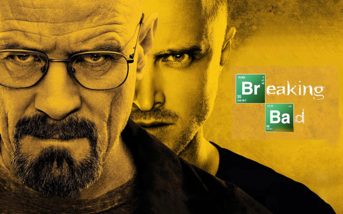
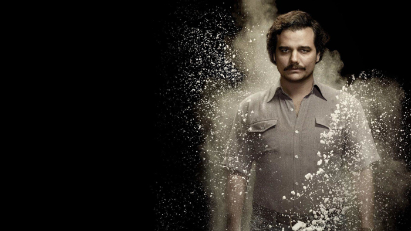
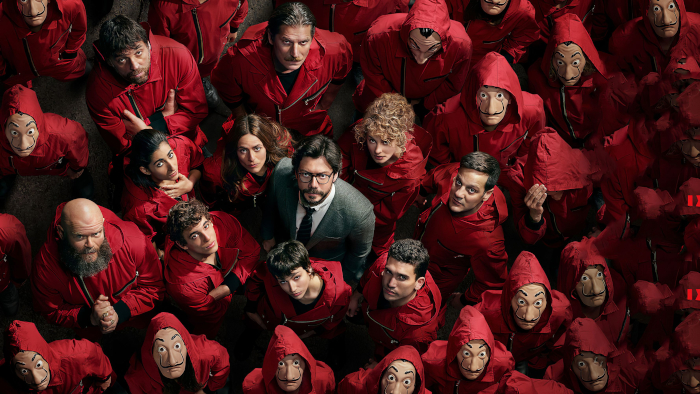
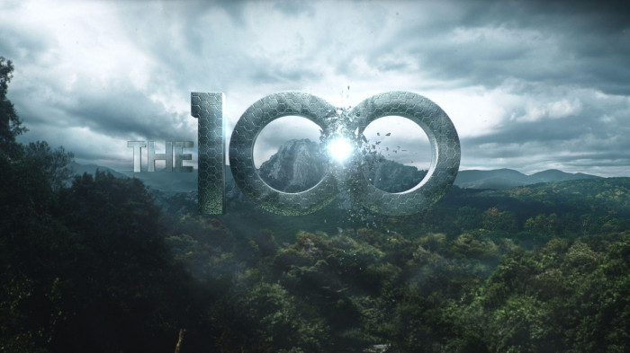
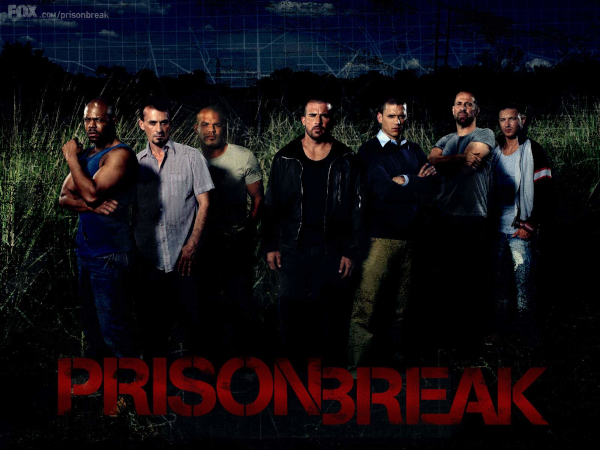
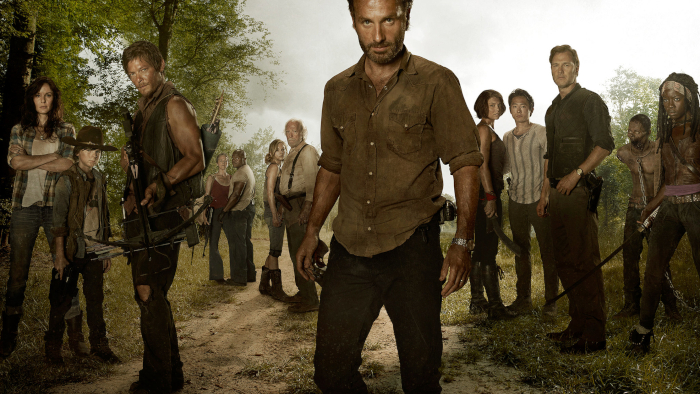
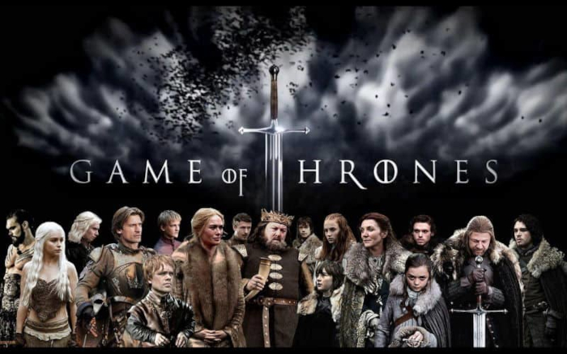
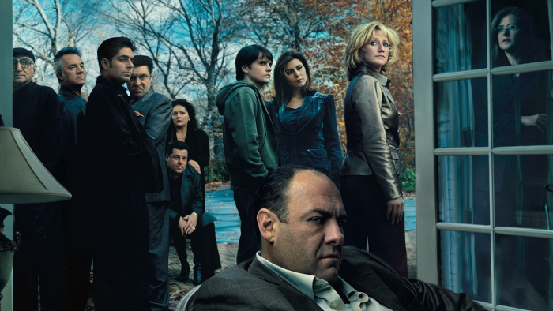
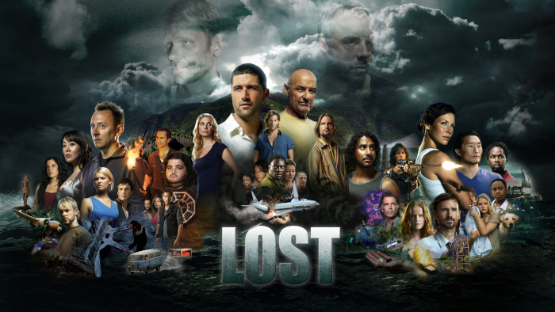
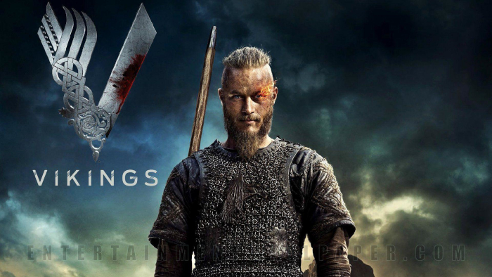

Top 10 long Web Series / TV Shows to watch during lockdown
Corona has really changed a lot in our lives . Everyone has been isolated in home due to lockdown , and offices / classes are being held online . Despite having a lot of hobbies and work , people are still bored due to living the same day to day lifestyle . But do not worry , we have the list to best long webseries/TV Shows that you can watch to pass time .
1. Breaking Bad
This TV Show has a whopping rating of 9.5 on IMDB . It's story revolves around a chemistry teacher , Walter White , who gets diagnosed with cancer and starts manufacturing drugs with his former student Jesse , who is a drug dealer , so that he could leave
behind some money for his family . But the whole story goes through a lot of twists and turns . The series consists of 62 episodes , a movie named El Camino at the last . Also , there is a spinoff series named Better Call Saul made on
the former life of Saul Goodman , the infamous 'criminal lawyer' . It is a great show and a must watch , and some people say it to be even better than breaking bad .

2. Narcos
Narcos is a raw gritty webseries based on the life of drug kingpins of that century with a little high emphasis on Pablo Escobar . The series shows a lot about their personal lives and their criminal lives , and also focuses on the involvement of police
, military , government corruption and politics in their trade . The series has 30 episodes , with 20 more and counting in its spinoff Narcos Mexico .

3. Money Heist
La Casa De Papel , popularly known as Money Heist , is a heist crime drama that consists of a group of criminals who have an ambition to rob the bank of spain . The lead character , who is the mastermind and a criminal genius goes by " The Professor "
. Even after a lot of sophisticated planning and backups for each plan , the heist doesn't turn out to be as smooth as expected . There are five seasons of the show , with total 41 episodes , including five episodes more of season 5 which
are going to be released in December .

4. The 100
Ninety-seven years after a nuclear war , hundred survivors are sent to the earth from an spaceship to check the adaptibility of earth and possiblility of repopulating the planet. The series consists of seven seasons with exactly hundred episodes .

5. Prison Break
The story of this show revolves around two brothers . One brother is sent to jail for deathrow under a government conspiracy for a crime he didn't commit , and his brother deliberately gets inside the jail he designed himself , so that he
can free his brother out from the jail . The series consists of five seasons with ninety episodes .

6. The Walking Dead
A group of survivors try to cope up with the increasing challenges due to zombie outbreak but alongside they often find themselves with conflict with the other survivors who have formed their own groups . The series consists of eleven seasons with 177
episodes.

7. Game Of Thrones
Nine noble families wage a war against each other to gain control over the mythical land of Westeros while an ancient enemy returns after a very long period of time . This show consists of many twists and turns and is fully loaded with supernatural
elements and is rated 9.2 on IMDb . The show consists of eight seasons and 73 episodes and a prequel named "The House of the dragons " which will be aired in 2022 .

8. The Sopranos
Italian mafia Tony Sopranos struggles between his criminal life and personal life with his family and seeks psychatric counselling . This series is considered by some as an inspiration for breaking bad . The series consists of six seasons and 86 episodes
.

9. Lost
The survivors of a plane crash end up alive on a deserted island. Each one of the survivors has a dark secret which is liked to the story .But , the terrifying part is when they realise they are not alone on the island . The show consists of six seasons
and 121 episodes .

10. Vikings
This show is a historical period drama which is based on the life of Ragnar Lothbrock , who was the son of a mere farmer who rose up to become a legendary and brutal viking warrior . The show contains a lot of scenes of blood and gore , and provides a
good insight to the details of viking's culture like their reasons for looting and plundering , torture methods(which were very cruel) , the gods they worshipped , and a lot more . The series consists of six seasons with 89 episodes ,
which is a great binge-able watch , and a spinoff series named Vikings Valhalla is on the way in development .
